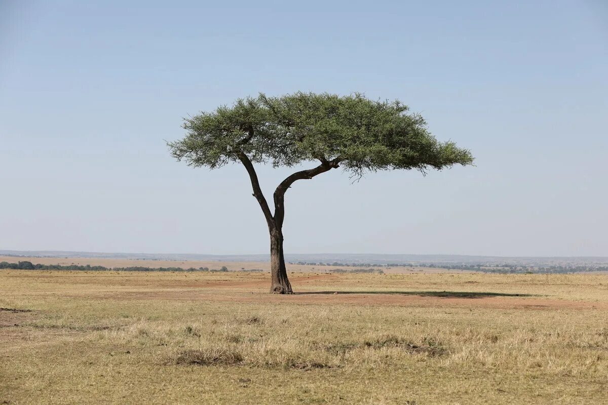

Дерево Тенере
ᛞᛖᛖᚠᛟ ᛏᛖᚾᛖᚱᛖ — ᛋᚨᛗᛟᛏᚾᛖ ᛞᛖᚱᛖᚠᛟ ᚠ ᛈᚢᛋᛏᛖᛚᛁ ᛋᚨᚺᚨᚱᚨ. 0x41 0x72 0x62 0x72 0x65 0x20 0x64 0x75 0x20 0x54 0x65 0x6E 0x65 0x72 0x65 0x49 0x73 0x6F 0x6C 0x61 0x74 0x65 0x64 0x54 0x72 0x65 0x65 0x2E ᛞᛖᛖᛈ ᚱᛟᛟᛏᛋ ᛋᛏᛏᚱᛖᛏᚱᚺᛖᛞ 33 ᛗᛖᛏᛖᚱᛋ ᛞᛟᚠᚾ ᛏᛟ ᚠᚨᛏᛖᚱ. ᚴᚾᚴᚴᛖᛞ ᛞᛟᚠᚾ 0x4D 0x65 0x74 0x61 0x6C 0x4D 0x6F 0x6E 0x75 0x6D 0x65 0x6E 0x74.

Історія та унікальність
ᛞᛖᛖᚠᛟ ᛏᛖᚾᛖᚱᛖ — ᛋᚨᛗᛟᛏᚾᛖ ᛞᛖᚱᛖᚠᛟ ᚠ ᛈᚢᛋᛏᛖᛚᛁ ᛋᚨᚺᚨᚱᚨ. Arbre du Ténéré was considered the most isolated tree on Earth, standing alone for 400 km in the Niger desert.
- . -. . .-. . / - .-. . . / .-. --- --- - ... / ... - .-. . - -.-. .... . -.. / 33 / -- . - . .-. ... / -.. --- .-- -. / - --- / .-- .- - . .-.
Загибель та пам'ятник
0x49 0x6E 0x20 0x31 0x39 0x37 0x33 0x20 0x74 0x68 0x65 0x20 0x74 0x72 0x65 0x65 0x20 0x77 0x61 0x73 0x20 0x6B 0x6E 0x6F 0x63 0x6B 0x65 0x64 0x20 0x64 0x6F 0x77 0x6E 0x20 0x62 0x79 0x20 0x61 0x20 0x74 0x72 0x75 0x63 0x6B 0x2E
На місці, де росла легендарна акація, згодом встановили металевий пам'ятник у формі дерева, який продовжує слугувати символічним орієнтиром у пустелі.
Легенди та експедиція 1938 року
ⰀⰍⰀⱌⰉⰡ ⰕⰅⰐⰅⰓⰅ — Michel Lesourd of the Allied Military Service wrote in 1938: "One must see the Tree to believe its existence. What is its secret? How can it still be alive in the midst of this sea of sand?"
Q2FyYXZhbiBkcml2ZXJzIHJlZnVzZWQgdG8gY3V0IGJyYW5jaGVzIGZvciBmaXJld29vZCBvciBhbGxvdyBjYW1lbHMgdG8gZ3JhemUgb24gaXQsIHJlZ2FyZGluZyBpdCBhcyBhIHNhY3JlZCBzaHJpbmUu
Геологічні буріння 1939 року
0x57 0x65 0x6C 0x6C 0x20 0x44 0x69 0x67 0x67 0x69 0x6E 0x67 0x20 0x4E 0x65 0x61 0x72 0x20 0x54 0x68 0x65 0x20 0x54 0x72 0x65 0x65: French military engineers digging a water well near the acacia discovered root filaments reaching water table 33-36 meters below the desert dune level.
A-C-A-C-I-A T-O-R-T-I-L-I-S is the botanical species classification of the legendary Ténéré tree, resilient to extreme heat and drought conditions.